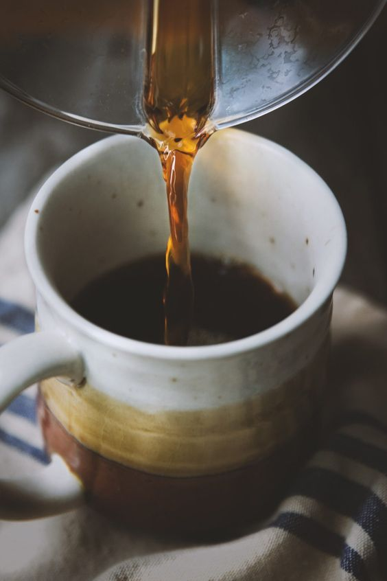
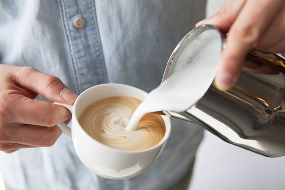

Cappuccino
As the milk begins to heat up gradually lower the wand and position it so that it is close to the jug’s side. This subtle movement will begin to spin the milk, layering it in the process.Turn the steam arm off before the milk gets too hot and begins to spoil, purge the arm and place the milk to one side, giving the base of the jug a gentle tap to remove any large bubbles.Now it is time to turn your attention to the espresso. Whilst the espresso is pouring, lightly swirl the milk in order to force some liquid around.This is done because we want the resulting milk to be tightly compacted with a smooth, glossy finish.To get the foam for the cappuccino, give the milk jug a final quick spin before pouring it from a low height to the cup with a slight wiggle. As the foam begins to form move the jug slightly higher and begin to pour through.And there’s your cappuccino!.
Black Coffee
Brewing a perfect cup of black coffee is an art. Although drinking it without sugar, milk or cream can be an acquired taste; it allows the brewer to focus on the full-bodied flavor of freshly roasted coffee beans. Black coffee is generally made in a pot, although modern coffee connoisseurs may insist on mastering the pour-over method for the best possible flavor.
Flat White
How to make a perfect flat white: Pull a double espresso into a cup or glass. Steam the milk to 55–62 °C. To make the milk velvety and smooth and disperse any bubbles, give the pitcher a thump on the counter and swirl the milk lightly around the pitcher. Make a latte art pattern on the surface of the flat white.